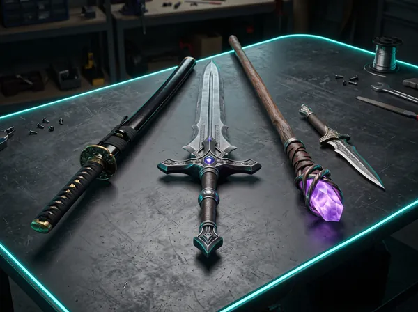
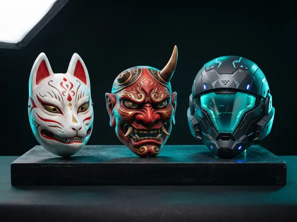
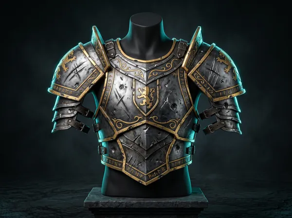
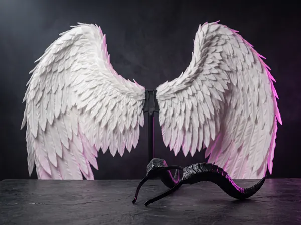

Каталог бутафории для косплея

Оружие и клинки
Катаны охотников на демонов, мечи из сёнэнов, косы и посохи. Внутри — стеклопластиковый или…

Маски и шлемы
Рельефные маски из 3D-печати и EVA-пены: вентиляционные отверстия, подкладка с памятью формы и…

Доспехи и броня
Броня из EVA-пены плотностью 70–100 Shore: лёгкая, прочная и детализированная. Выкройка строится по…

Крылья и рога
Лёгкие крылья на складном каркасе и рога персонажей — аксессуары, которые делают образ…
Подбор по параметрам
По вселенной
Клинок, рассекающий демонов · Genshin Impact · Звёздные войны · Ведьмак · Наруто
По материалу
EVA-пена · 3D-печать · полиуретан · термопластик
По бюджету
до 5 000 ₽ · 5 000–15 000 ₽ · от 15 000 ₽
Пришлите арт персонажа — посчитаем стоимость и сроки за 24 часа.
Рассчитать стоимость по арту